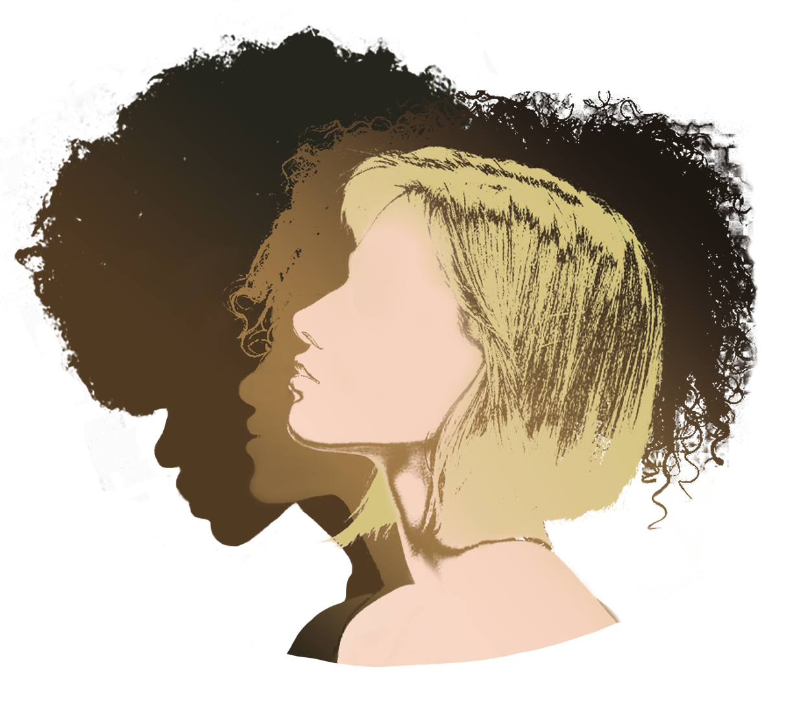

Let's Talk Hair
Hair can be categorized in two different ways: by porosity and by curl patterns. First of all, hair porosity defines how easily your hair reacts to water and products. Low porosity hair, for instance, might be more coarse when dry, and very crunchy and hard when doused with lots of heavy product. High porosity hair might be more frizzy when dry, and a lot of products might hardly have any effects on the hair.